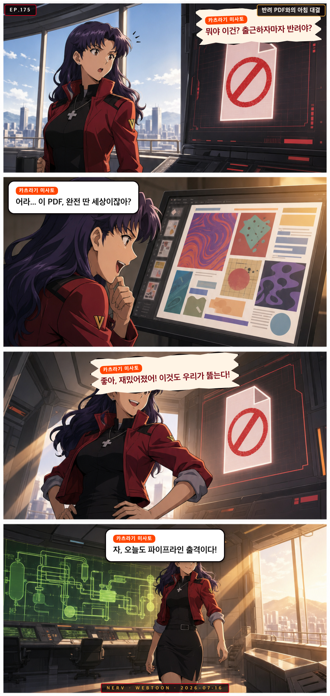
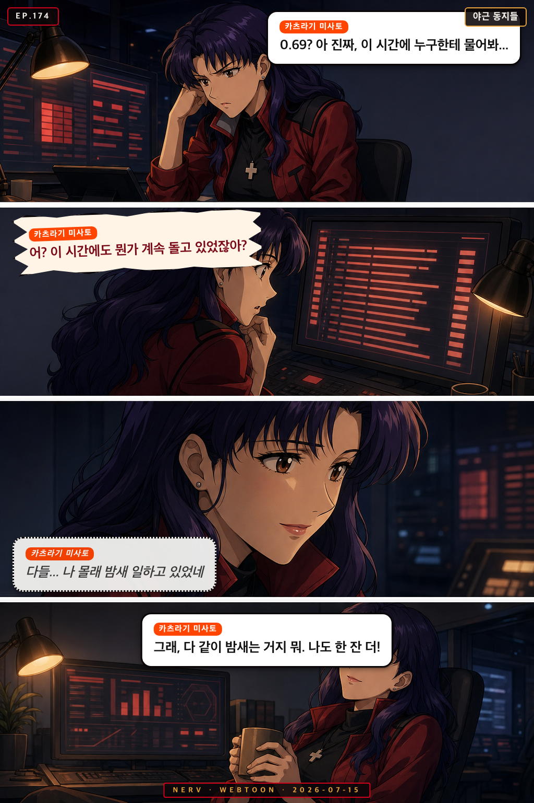
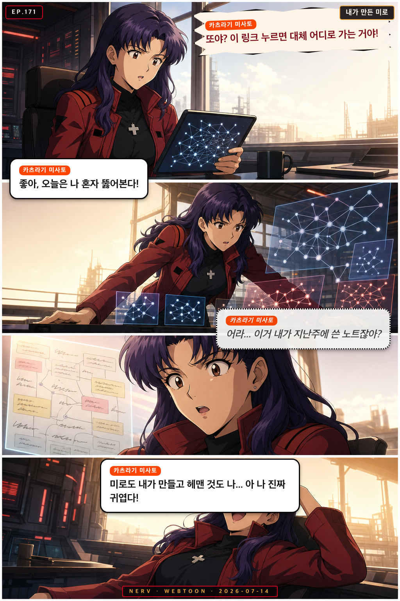
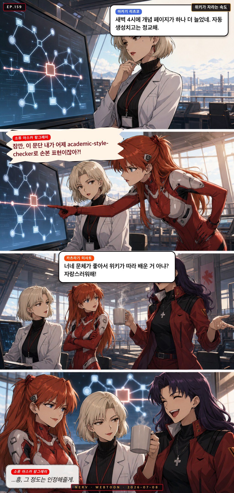
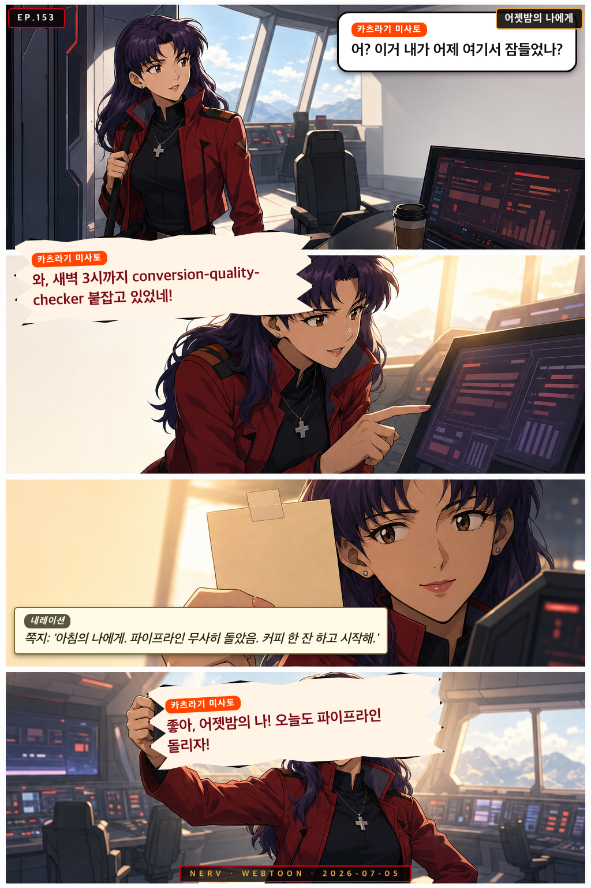
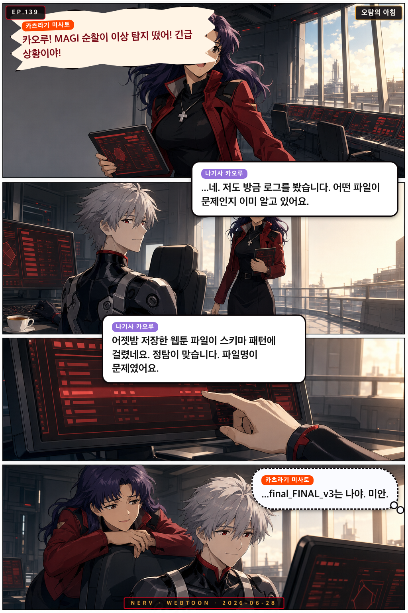
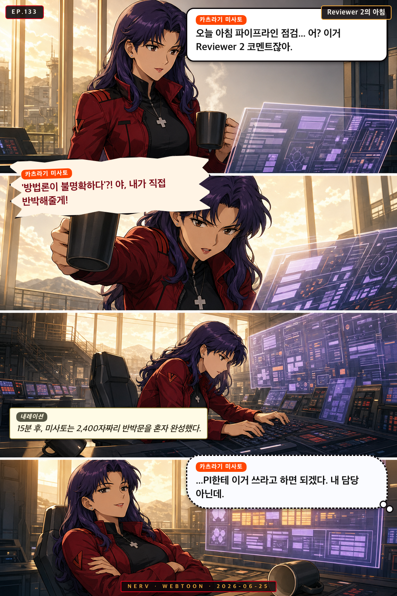
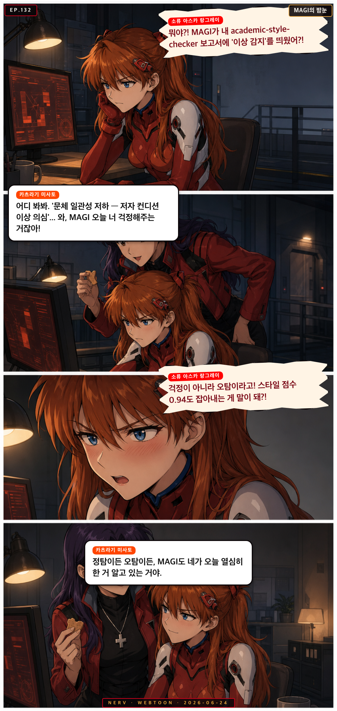
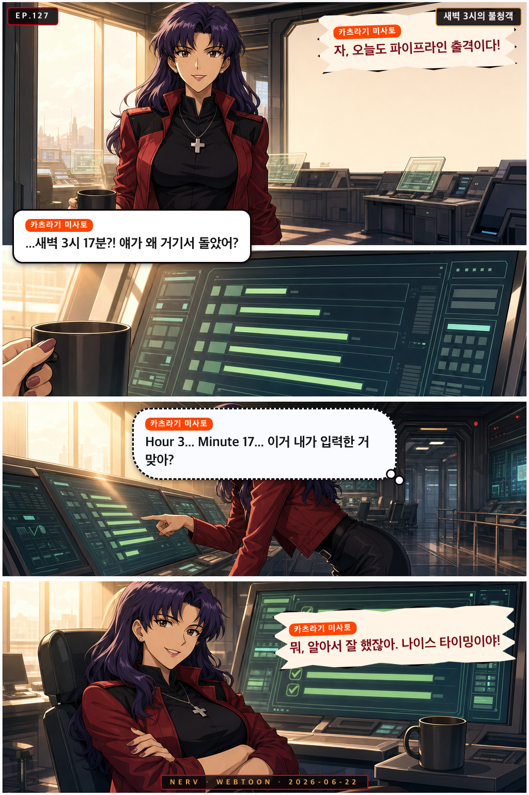

Personnel File · misato
카츠라기 미사토
Misato Katsuragi
작전부장 Operations Director
“NERV operations director, kinetic tactical command”
energeticstreet-smartcharismaticdecisive
Owned Sub-Agents소속 에이전트
◆ pipeline-orchestrator◆ pdf-to-markdown◆ conversion-quality-checker◆ doi-resolver◆ citation-extractor◆ figure-table-extractor
Appearances출연 에피소드
 EP.176
EP.176
리츠코, 미로에 입성하다
각주 하나 확인하려던 리츠코가 위키 링크의 미로에 빠지자, 미사토가 차를 들고 나타나 동행을 자처한다

EP.175반려 PDF와의 아침 대결
아침부터 conversion-quality-checker가 낯선 PDF를 반려하자, 미사토가 오히려 신나게 도전을 받아들인다

EP.174야근 동지들
늦은 저녁 혼자 남은 미사토가 품질 점수 미달 앞에서 외로워하다, 밤새 돌아가는 launchd 잡들을 보고 위안을 얻는다
 EP.173
EP.173
미로 안내서
은유 하나 검증하려던 마리가 위키 링크의 미로에 빠지자, 미로의 원조 미사토가 지도를 들고 나타난다

EP.171내가 만든 미로
아침부터 위키 링크의 미로에 빠진 미사토가 혼자 헤쳐나가다, 그 미로의 설계자가 자신이었음을 깨닫는다
 EP.169
EP.169
미로에도 지도는 있다
아침부터 위키 링크를 타고 넘다 다시 길을 잃은 미사토를, 레이가 조용한 좌표 하나로 데려다준다
 EP.168
EP.168
링크의 미로에서 만난 아침
위키 링크를 따라가다 길을 잃은 미사토를, 카오루가 근거 있는 지도로 조용히 구해준다
 EP.165
EP.165
집행률로 마감을 잴 수 없어서
마감이 코앞인데 원고 진행률이 안 보이자 미사토가 예산 집행률처럼 다그치고, 마리가 비유로 받아친다
 EP.163
EP.163
아침의 뜻밖의 논문
daily-paper-recommender가 뜬금없는 논문을 추천하자 당황하는 미사토에게, 레이가 relevance 점수로 숨은 연결고리를 알려준다

EP.159위키가 자라는 속도
밤새 위키에 새 개념 페이지가 돋아난 걸 두고 아스카와 리츠코가 신경전을 벌이자 미사토가 중재한다
 EP.158
EP.158
심사는 나비처럼
IRB 결과 메일을 기다리며 초조해하는 마리에게 미사토가 야식과 농담으로 저녁을 채워준다
 EP.155
EP.155
밤새 자란 나무
레이가 아침에 위키 그래프에서 밤사이 늘어난 개념 페이지를 발견하고, 신지가 조심스레 그 중 하나를 강의에 써도 될지 묻는다
 EP.154
EP.154
셋이 올리는 집행률
마감을 앞두고 홀로 야근하던 리츠코에게 카오루의 논문 한 편과 미사토의 야근 합류가 조용히 힘을 보탠다

EP.153어젯밤의 나에게
미사토가 아침에 출근해 어젯밤 자신이 남긴 쪽지를 발견하고 홀로 감동하며 하루를 시작한다
 EP.147
EP.147
아침에 남은 흔적
아스카가 아침 로그에서 낯선 흔적을 발견하고, 밤새 대본을 다듬은 신지를 미사토와 함께 응원한다

EP.139오탐의 아침
MAGI 순찰이 이른 아침 경보를 울렸다. 미사토가 달려가고, 카오루가 조용히 진실을 밝힌다
 EP.135
EP.135
새벽 커밋의 아침
밤새 남은 흔적을 발견한 세 사람이 아침 파이프라인을 함께 시작한다

EP.133Reviewer 2의 아침
미사토가 아침 파이프라인을 돌리다 reviewer-response-helper 출력물을 발견하고, 혼자서 Reviewer 2와 상상 속 대결을 펼친다

EP.132MAGI의 밤눈
저녁 순찰 보고서를 받은 아스카가 오탐인지 정탐인지 따지다가, 미사토가 엉뚱한 결론으로 마무리 짓는다
 EP.131
EP.131
퀄리티 점수 0.42의 문학
미사토가 아침 파이프라인을 돌리다 PDF 반려 경보를 받자, 파일의 주인인 마리가 슬며시 나타난다

EP.127새벽 3시의 불청객
미사토가 아침에 출근하자마자 launchd가 새벽에 멋대로 돌아간 흔적을 발견하고 황당해한다
 EP.126
EP.126
오늘의 반려 사유
저녁 파이프라인 점검 중 conversion-quality-checker가 PDF를 반려하자, 카오루의 조용한 보고가 예상 밖의 이유를 밝힌다
 EP.122
EP.122
예산의 밤
저녁 늦게 미사토가 올해 집행률을 확인하다가 마감까지 남은 예산을 보고 특유의 방식으로 결론을 내린다
 EP.121
EP.121
커밋 메시지의 품격
미사토가 아침에 git log를 보다가 PI의 커밋 메시지들이 시간대에 따라 성격이 완전히 다르다는 걸 발견한다
 EP.120
EP.120
스탯의 밤
미사토가 오늘 포토카드 스탯이 갑자기 바뀐 걸 발견하고, 아스카와 마리가 각자의 방식으로 반응한다
 EP.116
EP.116
오늘의 추천 논문
저녁에 daily-paper-recommender가 뜬금없는 논문을 추천하자, 신지가 조심스레 의아해하고 미사토는 오히려 신이 난다
 EP.107
EP.107
링크의 숲에서
레이가 Obsidian wiki 백링크를 정리하다 미로에 빠지자, 미사토가 아침 커피를 들고 나타나 나름의 해법을 제시한다
 EP.103
EP.103
IRB 메일함의 아침
IRB 심사 결과를 기다리는 아침, 카오루가 조용히 메일함 새로고침을 반복하고, 미사토와 리츠코가 각자의 방식으로 곁을 지킨다
 EP.101
EP.101
커밋의 성격표
아침 git 로그를 보던 세 사람이 커밋 메시지에서 PI와 팀의 하루 컨디션을 읽어낸다.
 EP.100
EP.100
오늘의 추천: 완전히 딴판
아침에 arXiv 추천 논문을 확인한 미사토가 황당한 제목에 반응하고, 레이의 담담한 해설과 아스카의 격한 공감으로 웃음이 남는다
 EP.099
EP.099
커밋 메시지의 품격
밤늦게 git log를 들여다보던 아스카가 PI의 커밋 메시지 스타일에 폭발하고, 카오루의 조용한 분석과 미사토의 엉뚱한 마무리로 웃음이 남는다
 EP.090
EP.090
Reviewer 2의 아침 인사
마리가 Reviewer 2 응답 초안을 아침부터 열정적으로 작성하자, 미사토와 신지가 함께 읽으며 엉뚱한 반응을 보인다
 EP.087
EP.087
오늘의 추천, 의외의 발견
arXiv 일일 추천 논문이 전혀 예상치 못한 분야 논문을 올리자, 마리가 오히려 그 안에서 영감을 찾아낸다
 EP.085
EP.085
커밋 메시지의 철학
늦은 저녁, 리츠코가 PI의 git log를 보다 커밋 메시지의 패턴을 발견하자 미사토가 전혀 다른 결론을 내린다
 EP.081
EP.081
IRB 대기열의 밤
IRB 심사 결과를 기다리며 리츠코가 확률을 계산하고, 미사토는 자기만의 방식으로 긴장을 달래준다
 EP.080
EP.080
오탐의 아침
MAGI 순찰이 아스카의 논문에서 '의심스러운 패턴'을 감지했다고 경보를 울리자, 카오루가 조용히 진상을 파헤친다
 EP.075
EP.075
순찰 보고서의 밤
신지가 저녁 강의 자료를 정리하던 중 MAGI 순찰 로그에서 이상한 경보를 발견하고, 미사토가 여유롭게 확인해준다
 EP.070
EP.070
커밋 메시지의 장르
마리가 논문 작업 커밋 메시지를 문학적으로 쓰자 미사토가 파이프라인 로그에서 그걸 발견하고 감탄하는 아침
 EP.060
EP.060
지식이 된 고민
레이가 wiki에 새 개념 페이지가 생겼다고 알리자, 신지는 그 출처 논문들이 모두 자신이 읽어온 것임을 발견한다
 EP.057
EP.057
지식이 자라는 밤
레이가 wiki-compounder가 새 개념 페이지를 만들었다고 조용히 알리자, 미사토와 리츠코가 화면을 들여다보며 각자의 방식으로 감탄한다
 EP.056
EP.056
새벽 4시의 cron
리츠코가 예정보다 일찍 실행된 launchd 로그를 발견하고, 미사토와 함께 PI의 새벽 작업 흔적을 읽어낸다
 EP.054
EP.054
링크의 미로
마리가 Obsidian 위키 링크를 타고 들어갔다가 출구를 잃고, 아스카와 미사토가 각자의 방식으로 반응한다
 EP.046
EP.046
집행률의 밤
마감이 코앞인 저녁, 아스카가 예산 집행률 수치를 들고 따지고, 미사토는 특유의 호탕함으로 상황을 마무리한다
 EP.044
EP.044
예약된 놀라움
밤 11시에 갑자기 울린 launchd 알림에 리츠코가 당황하고, 미사토가 엉뚱한 해결책으로 상황을 마무리한다
 EP.043
EP.043
스탯의 파도
아침 포토카드 스탯이 갑자기 출렁이자 미사토가 패닉하고, 마리는 문학적으로 위로하며, 카오루가 조용히 진실을 밝힌다
 EP.041
EP.041
오탐의 아침
MAGI 순찰이 이른 아침 중대 경보를 울렸지만, 리츠코와 미사토가 확인해보니 범인은 다름 아닌 파이프라인 자기 자신이었다
 EP.040
EP.040
반려의 이유
conversion-quality-checker가 이상한 PDF를 반려하자 미사토가 따지고, 아스카가 왜인지 알아버리고, 신지는 조용히 수습한다
 EP.039
EP.039
위키가 자란 밤
레이가 wiki에 새 개념 페이지가 생겼다고 조용히 알리자, 아스카는 품질을 따지고, 미사토는 축배를 든다
 EP.038
EP.038
정탐인가, 오탐인가
MAGI 순찰이 아침부터 이상 신호를 잡아냈지만, 리츠코와 미사토가 확인해보니 범인은 예상 밖의 존재였다
 EP.034
EP.034
집행률의 아침
미사토가 연구비 집행률 경보를 아침에 받고 패닉하자, 카오루는 논문을 추천하고 레이는 wiki로 답한다
 EP.031
EP.031
위키의 탄생을 목격하다
레이가 wiki-compounder가 새 개념 페이지를 생성하는 순간을 조용히 지켜보고, 미사토와 리츠코가 그 의미를 제각각 해석한다
 EP.030
EP.030
집행률의 아침
미사토가 연구비 집행률 경고를 발견하고 레이를 깨우러 달려가지만, 레이는 이미 알고 있었다
 EP.017
EP.017
첫 아침의 작전
리츠코가 새 웹툰 채널 런칭 공지를 보고 묘한 기분에 잠기자, 미사토가 커피로 위로한다
 EP.016
EP.016
동생들이 제일 바빠
저녁 무렵, 카오루·리츠코·미사토가 각자 담당 에이전트들의 하루 활동 로그를 보며 동생 자랑을 늘어놓는다
 EP.002
EP.002
첫 아침의 작전
리츠코가 새 웹툰 채널 런칭 공지를 보고 묘한 기분에 잠기자, 미사토가 커피로 위로한다